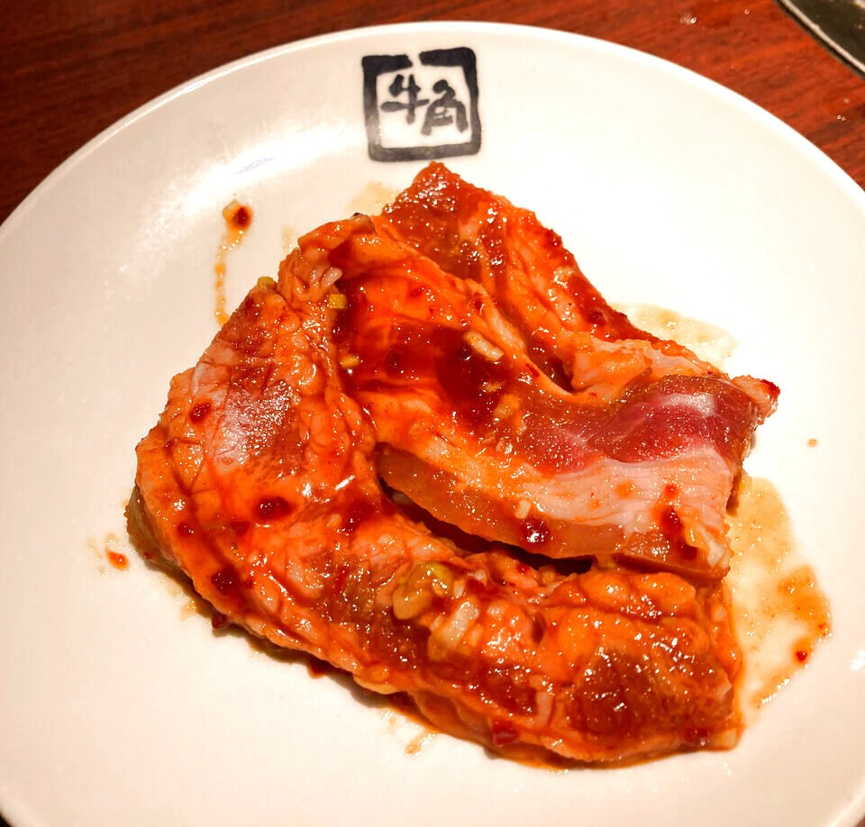
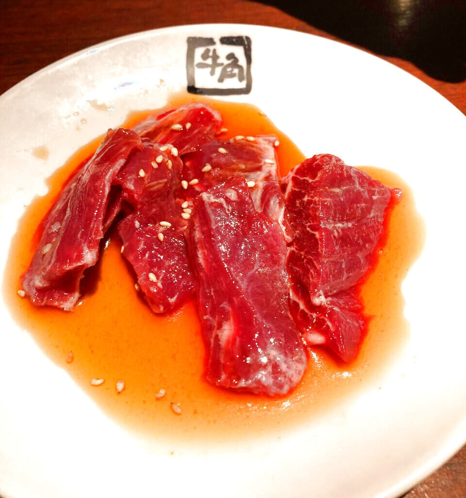
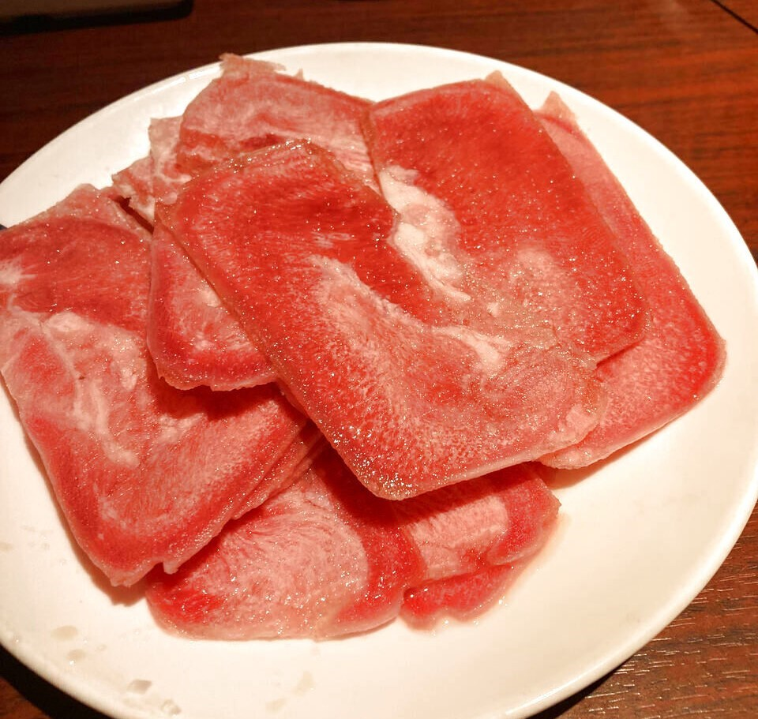
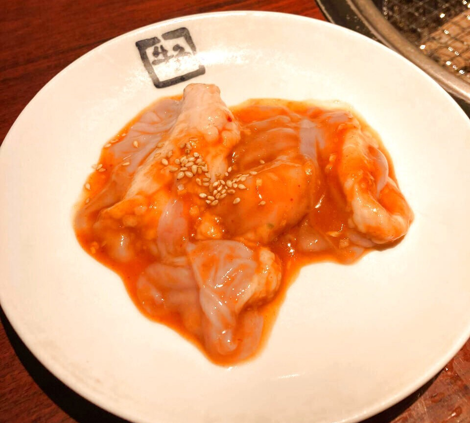
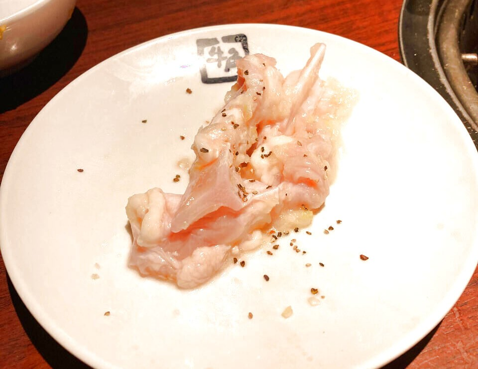
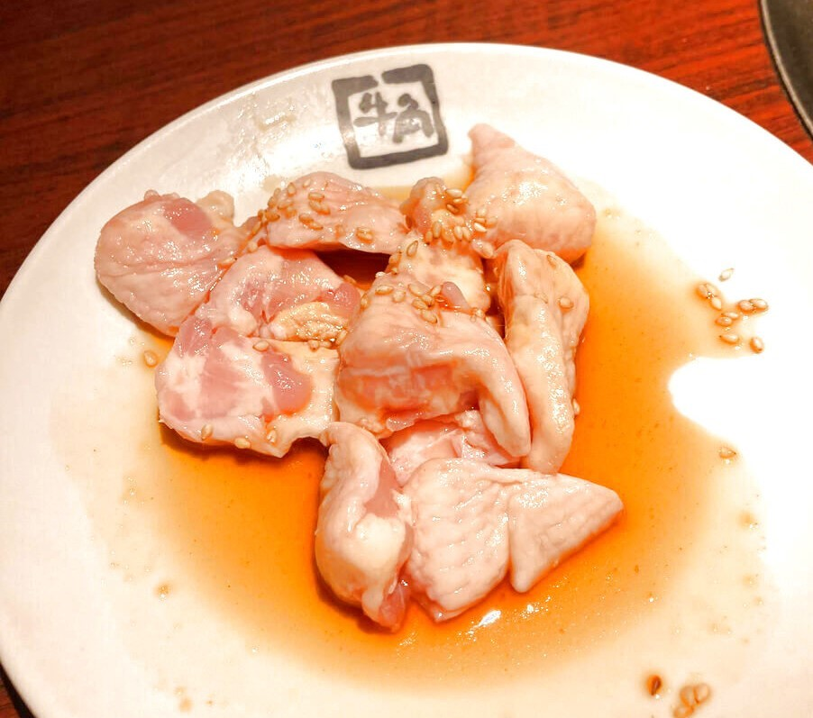

メニュー
牛肉
工大カルビ
牛骨の間にたっぷり詰まった旨味を引き出すために、一本一本丁寧にカットしました。濃厚な肉の甘さと香ばしさが、炭火の香りと絶妙にマッチします。食べた瞬間、口の中でジュワッと広がる至福の味わいをお楽しみください。
カルビ

焼肉の王道といえばこれ！選び抜かれた上質なカルビは、ジューシーな脂の甘さと深みのある旨味が特長です。炭火で焼き上げることで肉汁が封じ込められ、食欲をそそる香りが広がります。一度食べたら忘れられない味わいです。
ハラミ
焼肉ファン必食の逸品！柔らかな肉質と濃厚な赤身の旨味が特徴のハラミ。特製のタレと炭火の香ばしさが相まって、口いっぱいに広がる満足感。国民的アイドルのような愛される美味しさです。
豚肉
トンたん塩
豚のタンを特製の塩だれで漬け込み、炭火で焼き上げた一品。コリコリとした食感が癖になる、焼肉通も唸る美味しさ。牛タンに負けない風味と満足感をお約束します。
やみつき豚ホルモン
厳選した豚ホルモンを特製の味噌だれで漬け込み、香ばしく焼き上げました。ぷりぷりとした食感と濃厚な旨味が特徴。ひと口食べるとやみつきになる、名前通りの一品です
鶏肉
ハラミ付きヤゲン
じっくりと焼き上げたヤゲン軟骨にジューシーな鶏ハラミを組み合わせた贅沢な逸品。コリコリとした食感とジューシーな旨味が絶妙に絡み合い、炭火焼きの香りがさらに食欲をそそります。
とりもも
鶏もも肉のジューシーさと柔らかさを最大限に引き出した逸品。特製のタレで焼き上げることで、肉の旨味がさらに引き立ちます。お子様から大人まで大人気の一品で、ご家族全員で楽しめます。